0x01 常见漏洞
CVE-2014-0160 - 心脏滴血漏洞
https://cve.mitre.org/cgi-bin/cvename.cgi?name=CVE-2014-0160
漏洞描述
主要出现在 OpenSSL 处理 TLS 心跳的过程中，TLS 心跳的流程是：A 向 B 发送请求包，B 收到包后读取这个包的内容(data)，并返回一个包含有请求包内容的响应包。请求包的内容(data)中包含有包的类型(type)和数据长度等信息。
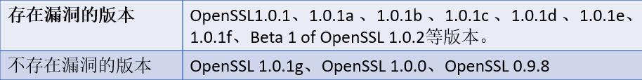
Heartbleed 漏洞是由于未能在 memcpy() 调用受害用户输入内容作为长度参数之前正确进行边界检查。攻击者可以追踪 OpenSSL 所分配的 64KB 缓存、将超出必要范围的字节信息复制到缓存当中再返回缓存内容，这样一来受害者的内存内容就会以每次 64KB 的速度进行泄露。我们可以通过该漏洞读取每次攻击泄露出来的信息，所以可能也可以获取到服务器的私钥，用户 cookie 和密码等。
测试方法
在线测试：Heartbleed OpenSSL extension testing tool, CVE-2014-0160 (possible.lv)
# testssl.sh
./testssl.sh -H TARGET(ip:port/域名)
# nmap
nmap -p 443 --script ssl-heartbleed --script-args vulns.showall 10.x.x.x
Starting Nmap 7.25BETA2 ( https://nmap.org ) at 2017-01-20 22:45 EST
Nmap scan report for 10.0.1.159
Host is up (0.00028s latency).
PORT STATE SERVICE
443/tcp open https
| ssl-heartbleed:
| VULNERABLE:
| The Heartbleed Bug is a serious vulnerability in the popular OpenSSL cryptographic software library. It allows for stealing information intended to be protected by SSL/TLS encryption.
| State: VULNERABLE
| Risk factor: High
| OpenSSL versions 1.0.1 and 1.0.2-beta releases (including 1.0.1f and 1.0.2-beta1) of OpenSSL are affected by the Heartbleed bug. The bug allows for reading memory of systems protected by the vulnerable OpenSSL versions and could allow for disclosure of otherwise encrypted confidential information as well as the encryption keys themselves.
|
| References:
| http://www.openssl.org/news/secadv_20140407.txt
| http://cvedetails.com/cve/2014-0160/
|_ https://cve.mitre.org/cgi-bin/cvename.cgi?name=CVE-2014-0160
MAC Address: 00:0C:29:35:3D:E8 (VMware)
Nmap done: 1 IP address (1 host up) scanned in 0.36 seconds
修复方法
升级 openssl 到 1.01g 及以上版本
CVE-2015-2808 - BAR-MITZVAH 攻击漏洞【原理扫描】
漏洞描述
该漏洞是由功能较弱而且已经过时的 RC4 加密算法中一个问题所导致的。它能够在某些情况下泄露 SSL/TLS 加密流量中的密文，从而将账户用户名密码、信用卡数据和其他敏感信息泄露给黑客。
测试方法
openssl s_client -connect host:443 -cipher RC4
# 返回内容出现 handshake failure 说明 RC4 已禁用，否则需要修复
修复方法
- 服务器端禁止使用 RC4 加密算法。
- 客户端应在浏览器 TLS 配置中禁止 RC4
- 在 nginx 配置参数 ssl_ciphers 中添加
!RC4 参数ssl_ciphers ALL:!RC4
CVE-2013-2566 - SSL/TLS RC4 信息泄露漏洞【原理扫描】
漏洞描述
TLS 协议和 SSL 协议中使用的 RC4 算法具有许多单字节偏移。远程攻击者可以通过使用相同明文的大量会话中的密文统计分析来进行明文破解攻击。
测试方法
# testssl.sh
./testssl.sh -4 TARGET
# nmap
使用 ./testssl.sh -E TARGET 手动枚举服务器密码或者 nmap -p 443 --script=ssl-enum-ciphers TARGET 确保服务器支持密码类型不使用 RC4
修复方法
- 同上
- https://support.microsoft.com/en-us/help/2868725/microsoft-security-advisory-update-for-disabling-rc4
- https://www.cnblogs.com/tsimfeiwan/p/16567279.html
CVE-2016-2183 - SSL/TSL 协议信息泄露【原理扫描】-- SWEET32
漏洞描述
64 位块大小（如 Triple-DES（3DES））的传统块密码在 CBC 模式下使用，易受到攻击。当使用 CBC 模式操作时，使用 simple birthday attack 来识别 64 位块密码冲突。当碰撞发生时，这意味着输入与输出相同，使得可以执行 BEAST style attack 来渗透加密的数据。
作者 Karthik Bhargavan 和 Gaetan Leurent 能够在浏览器（作为 MITM）中运行 JavaScript，并发送大量的数据导致冲突，然后使用此信息来恢复会话 cookie。
测试方法
确定服务器是否支持 Triple-DES 密码，如果服务器支持 Triple-DES，则易受 SWEET32 攻击。
# testssl.sh
./testssl.sh --ciphers TARGET
# 如果输出显示 Tripe DES 密码，就像下面的截图一样，目标服务器容易受到 SWEET32 的影响，使用 3DES 的任何密码都易受 SWEET32 影响
# nmap
nmap --script = ssl-enum-ciphers -p443 TARGET
nmap -sV --script ssl-enum-ciphers -p 443 www.example.com (ip 也可以)
# 输出以下则表示有漏洞
warnings:
| 64-bit block cipher 3DES vulnerable to SWEET32 attack
# 手工测试：根据上面方法测试用 Nmap NSE 脚本枚举密码
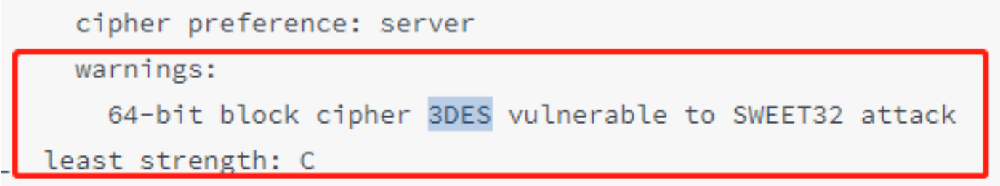
修复方法
升级 OpenSSL 版本【最优解】or 修改 Nginx 加密算法
OpenSSL 1.1.0 以后没有此漏洞，并且本地的 openssl 版本高于 1.1.0 https://www.openssl.org/news/secadv/20160922.txt
绿盟还是能扫描出来，因为 nginx 还在使用旧版本的 OpenSSL，优先升级 OpenSSL。(这个加密算法是跟 443 端口相关，有的项目没有做 https 所以没法修改只能升级) -- 突出一个【原理扫描（版本）】
下载 openssl 的稳定版本 https://www.openssl.org/
wget https://www.openssl.org/source/openssl-1.1.1g.tar.gz --no-check-certificate
编译安装
```shell tar xvf openssl-1.1.1g.tar.gz -C /usr/local/
cd /usr/local/openssl-1.1.1g/
./config && make && make install
echo "/usr/local/lib64/" >> /etc/ld.so.conf
ldconfig
mv /usr/bin/openssl /usr/bin/openssl.old
ln -sv /usr/local/bin/openssl /usr/bin/openssl
- openssl version，查看版本
- 替换 nginx 的 OpenSSL 旧版本为新版本，需要重新编译一下 nginx
```shell
./configure --user=www --group=www --prefix=/data/nginx --with-http_sub_module --with-http_stub_status_module --with-pcre --with-http_ssl_module --with-http_flv_module --with-http_gzip_static_module --with-http_realip_module --with-stream --with-stream_ssl_module --with-openssl=/usr/local/openssl-1.1.1g && make && make install
pkill -9 nginx
./nginx
查看 nginx 的 openssl 版本 ./nginx -V
nginx 开启的 443 端口，所以需要去修改 nginx 的配置文件，禁用 3DES 算法。
【注】:!3DES 是后添加的过滤
# nginx.conf 文件如下：
server {
ssl_ciphers ECDHE-RSA-AES128-GCM-SHA256:ECDHE:ECDH:AES:HIGH:!NULL:!aNULL:!MD5:!ADH:!RC4:!3DES;
ssl_protocols TLSv1 TLSv1.1 TLSv1.2;
}
./nginx -s reload
原文链接：https://blog.csdn.net/w184414332/article/details/126406154
CVE-2015-4000 - LogJam 中间人安全限制绕过漏洞【原理扫描】
漏洞描述
该漏洞可帮助攻击者将 TLS 连接降级为 512 位导出级加密。这有助于攻击者读取和修改通过网络连接传输的任何数据。
TLS 1.2 及更早版本，在服务器上启用但不在客户端启用 DHE_EXPORT 密码组时，没有正确转送 DHE_EXPORT 选择，中间人攻击者通过用 DHE_EXPORT 代替 DHE，重写 ClientHello，然后用 DHE 代替 DHE_EXPORT，重写 ServerHello(即"Logjam"问题)，利用此漏洞可执行密码降级攻击。
测试方法
# testssl.sh
./testssl.sh -J TARGET
# nmap
禁用 EXPORT 密码，说明与 FREAK 攻击相同。
修复方法
禁用 EXPORT 密码（SSLCipherSuite !EXPORT）或者升级 openssl 到安全版本
参考连接
CVE-2016-0800 - DROWN 跨协议攻击 TLS （溺水攻击/溺亡攻击）
漏洞描述
DROWN（使用过时和弱化的 eNcryption 解密 RSA），DROWN 攻击的最一般变体利用了 SSLv2 协议的一个根本缺点，允许中间人（MITM）攻击者利用导入符合 20 世纪 90 年代美国政府的限制（EXPORT 等级加密在下面的 FREAK 漏洞描述中详细描述）的密码学，可造成 DROWN 攻击(Decrypting RSA usingObsolete and Weakened eNcryption)。
测试方法
# testssl.sh
./testssl.sh -D TARGET
# nmap
nmap -p 443 -sV --script=sslv2-drown
# 针对 Web Server
openssl s_client -connect 待测域名或IP:443-ssl2
# 针对 SMTP Server
openssl s_client -connect 待测域名或IP:25-starttls smtp -ssl2
# 如果出现如下错误信息，则 SSLv2 已禁用
419:error:1407F0E5:SSL routines:SSL2_WRITE:ssl handshake failure:s2_pkt.c:428:
修复方法
- 如果是 cipher none 的话，能保证是不受影响的，或者说这是一个缓解措施。
- OpenSSL not 1.0.2a、1.0.1m、1.0.0r、0.9.8zf 及更早版本
- (转)OpenSSL CVE-2016-0800 和 CVE-2016-0703 漏洞修复细节拾趣 - liujiacai - 博客园 (cnblogs.com)
CVE-2015-0204 - OpenSSL FREAK Attack
漏洞描述
FREAK（破解 RSA 导出密钥），利用了 TLS/SSL 中的加密弱点，这是美国政府几十年前最初引入的。使用 RSA_EXPORT 密钥的想法是允许导出包含不能被大多数计算机破解的加密密钥。如果 RSA_EXPORT 密钥加密为 512 位或更少，那么以目前的计算机性能很容易破解。
FREAK 执行降级攻击（强制服务器使用较弱的密码），当与中间人（MITM）类型攻击相结合时，这允许攻击者捕获数据并中断弱密钥的解密。
此问题存在于 OpenSSL 版本 0.9.8zd 之前, 或 1.0.0p 之前的 1.0.0，或 1.0.1k 之前的 1.0.1。
测试方法
# testssl.sh
./testssl -F TARGET
# nmap
使用 ./testssl.sh -E TARGET 或者 nmap -p 443 --script=ssl-enum-ciphers TARGET 枚举服务器密码，确保服务器支持的以下类型密码不包含：EXPORT
openssl s_client -connect www.fbi.gov:443 -cipher EXPORT
# 如果你看到 "alert handshake failure" 这句话就说明该网站是安全的
修复方法
- 禁用 EXPORT 密码或者升级 openssl 到安全版本
-
SSLCipherSuite HIGH:!aNULL:!MD5:!EXP - OpenSSL FREAK Attack 漏洞(CVE-2015-0204)检测方法及修复建议 - SecPulse.COM | 安全脉搏
CVE-2014-3566 - POODLE SSLv3 攻击信息泄露漏洞【原理扫描】（卷毛狗攻击）
漏洞描述
该漏洞只对 CBC 模式的明文进行了身份验证，但是没有对填充字节进行完整性验证，攻击者可以发动中间人攻击拦截用户浏览器和 HTTPS 站点的流量，然后窃取用户的敏感信息。
Google 的安全小组在 2014 年 10 月 14 日发现了 POODLE 攻击（Padding Oracle On Downgraded Legacy Encryption）。该漏洞利用了 SSLv3 处理填充字节的方式（密码块链接）CBC 操作模式。
该缺陷允许中间人（MITM）攻击者在少于 256 个 SSLv3 连接中解密密文的所选字节，如果他们能够强制受害者应用程序重复发送相同的数据通过新创建 SSL 3.0 连接。
测试方法
testssl.sh
./testssl.sh -O TARGET
Kali 附带的 openssl 版本不再支持 SSLv3。 使用二进制码 testssl.sh/bin/openssl.Linux.x86_64 进行手动 SSLv3 测试。
./openssl.Linux.x86_64 s_client -ssl3 -connect 10.0.1.159:443
如果握手完成，则服务器容易受到 POODLE 的影响。
对于容易受到 POODLE 影响的服务器的输出示例（从响应中删除的证书）：
---
No client certificate CA names sent
Server Temp Key: DH, 1024 bits
---
SSL handshake has read 1398 bytes and written 373 bytes
---
New, TLSv1/SSLv3, Cipher is DHE-RSA-AES256-SHA
Server public key is 1024 bit
Secure Renegotiation IS supported
Compression: NONE
Expansion: NONE
No ALPN negotiated
SSL-Session:
Protocol : SSLv3
Cipher : DHE-RSA-AES256-SHA
Session-ID: 0450660185C7B2623CB2145A1C6655BDD8CC281F882C3B9E0ED35E88360639BA
Session-ID-ctx:
Master-Key: 6A56AC01754D9441ACFD6C0B9E534E33450CD2F0E0D619F235E2ACC1780CFD86E769B9AE82D0D5AAA4C62B295B5BB598
Key-Arg : None
PSK identity: None
PSK identity hint: None
SRP username: None
Start Time: 1484971085
Timeout : 7200 (sec)
Verify return code: 9 (certificate is not yet valid)
---
如果服务器不容易受到 POODLE 的影响，握手将失败，发生如下错误
CONNECTED(00000003)
28395584:error:14094410:SSL routines:ssl3_read_bytes:sslv3 alert handshake failure:s3_pkt.c:1475:SSL alert number 40
28395584:error:1409E0E5:SSL routines:ssl3_write_bytes:ssl handshake failure:s3_pkt.c:656:
---
no peer certificate available
nmap
# nmap
nmap -p 443 --script ssl-poodle --script-args vulns.showall 10.0.1.159
Starting Nmap 7.25BETA2 ( https://nmap.org ) at 2017-01-20 22:50 EST
Nmap scan report for 10.0.1.159
Host is up (0.00037s latency).
PORT STATE SERVICE
443/tcp open https
| ssl-poodle:
| VULNERABLE:
| SSL POODLE information leak
| State: VULNERABLE
| IDs: CVE:CVE-2014-3566 OSVDB:113251
| The SSL protocol 3.0, as used in OpenSSL through 1.0.1i and other
| products, uses nondeterministic CBC padding, which makes it easier
| for man-in-the-middle attackers to obtain cleartext data via a
| padding-oracle attack, aka the "POODLE" issue.
| Disclosure date: 2014-10-14
| Check results:
| TLS_RSA_WITH_AES_128_CBC_SHA
| References:
| http://osvdb.org/113251
| https://cve.mitre.org/cgi-bin/cvename.cgi?name=CVE-2014-3566
| https://www.imperialviolet.org/2014/10/14/poodle.html
|_ https://www.openssl.org/~bodo/ssl-poodle.pdf
MAC Address: 00:0C:29:35:3D:E8 (VMware)
Nmap done: 1 IP address (1 host up) scanned in 0.35 seconds
修复方法
- 禁用 sslv3.0 协议
CVE-2014-8730 - POODLE TLS（TLS 卷毛狗攻击）
漏洞描述
由于 TLS 填充是 SSLv3 的一个子集，因此可以重新使用针对 TLS 的 POODLE 攻击。TLS 对于它的填充格式是非常严格的，但是一些 TLS 实现在解密之后不执行填充结构的检查。即使使用 TLS 也不会容易受到 POODLE 攻击的影响。
资料来源：https://blog.qualys.com/ssllabs/2014/12/08/poodle-bites-tls
测试方法
openssl s_client -connect host:端口
# 输入 R 进行重协商，可重协商 10 次以上且连接未断开，证书链中的自签名证书，重协商成功，漏洞存在
# testssl.sh
./testssl.sh -R ip:port
修复方法
CVE-2013-3587 - BREACH（野兽攻击）
漏洞描述
BREACH 代表通过自适应压缩超文本进行浏览器检测和渗透。与 CRIME 相似之处是利用 HTTP 压缩中的漏洞，允许攻击者识别页面中是否存在文本。
测试方法
BREACH 攻击基本流程
当页面上发生文本重复时，将删除重复的术语，有助于减小页面的大小。这可以用于识别现有的页面内容，下面是 Web 应用程序的示例，显示当前登录的用户在页面中反映的用户名：
- 输入您认为不存在于搜索参数中的用户名
- 注意返回页面的大小
- 发送您认为存在的用户名的其他搜索请求
- 注意返回页面的大小，如果用户名与登录用户名匹配（确认存在），页面大小对比上次将会缩小
通过分析响应的大小可以预测文本，实际上没有流量被“解密”
为了使 BREACH 攻击成功地渗透数据，必须有一种机制来反映渲染页面中的用户输入，并且服务器必须支持 HTTP 压缩。
# testssl.sh
./testssl.sh -B TARGET
# 使用 openssl client
openssl s_client -connect TARGET:443
输入以下内容来确定服务器是否使用压缩：
GET / HTTP / 1.1
Host: TARGET
Accept-Encoding: compress, gzip
======== e.g.
GET / HTTP/1.1
Host: 192.168.201.216:9443
Accept-Encoding: compress, gzip
如果服务器返回乱码的字符，如下面的截图所示，则服务器支持压缩，容易受到 BREACH 的攻击。
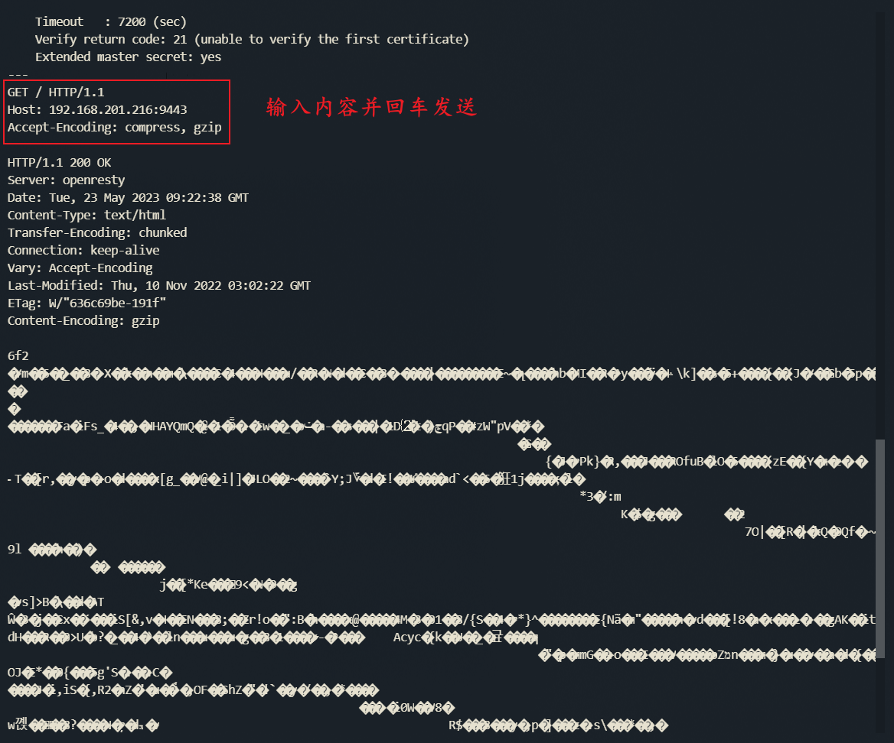
testssl.sh 测试
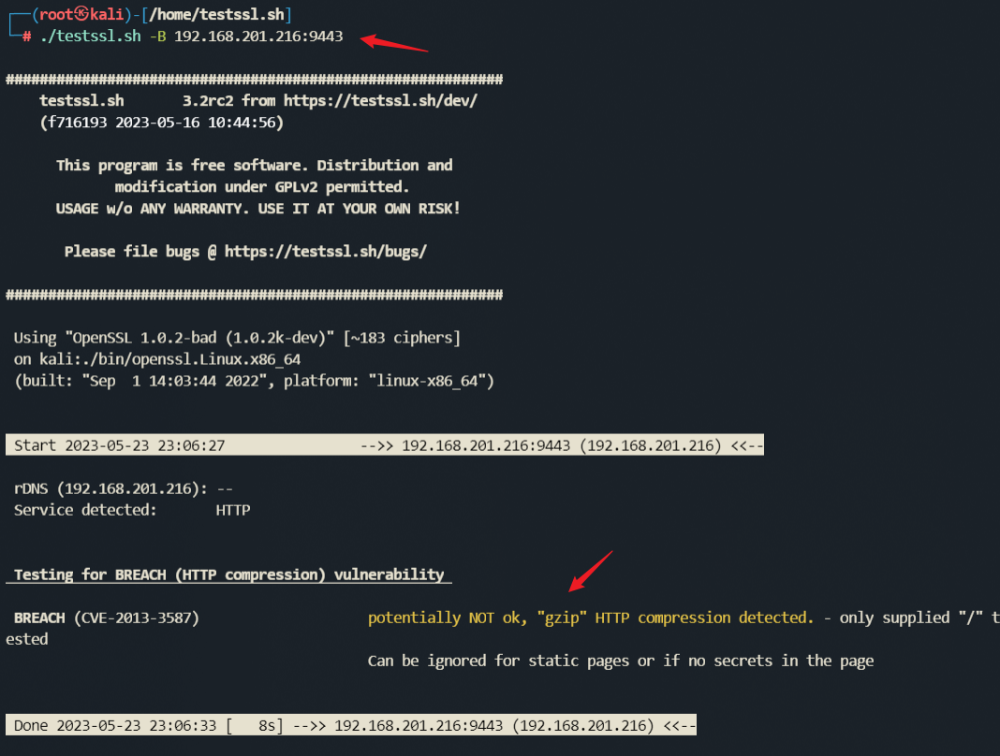
修复方法
- How to fix the BREACH vulnerability (CVE-2013-3587 CWE-310) (port135.com)
禁用 HTTP 压缩
- 将秘密与用户输入分开
- 根据请求随机化秘密
- 屏蔽秘密（通过 XORing 与每个请求的随机秘密有效地随机化）
- 使用 CSRF 保护易受攻击的页面
- 长度隐藏（通过向响应添加随机数量的字节）
对请求进行速率限制
第一个选项（禁用 HTTP 压缩）肯定会缓解此漏洞，并且扫描工具不会再显示它。但是，这可能会影响性能
- 2 - 5 的建议与应用程序的编码有关。它们可有效防止此类攻击。它们也是一般开发的最佳实践
- 建议 #6 和 #7 是与托管相关的设置。
安全版本
- OpenSSL 1.0.1k
- OpenSSL 1.0.0p
- OpenSSL 0.9.8zd
CVE-2012-4929 - CRIME（罪恶攻击）
漏洞描述
CRIME 是 TLS 1.2 漏洞，允许中间人（MITM）攻击者识别加密数据，（潜在）执行会话劫持。攻击者可以通过检查密文的大小来识别加密数据，同时从浏览器引入多个有效载荷，当字符匹配在标题内时，其大小会有所不同，允许攻击者修改会话 cookie。实际上没有使用 CRIME 攻击解密数据，TLS 1.2 处理压缩的一个弱点使得攻击者可以通过比较返回的大小来识别头文件何时存在。
测试方法
# testssl.sh
./testssl.sh -C TARGET
# 使用 openssl client，kali 使用的 openssl 似乎不再允许 TLS 1.2 压缩。如果您使用此版本的 openssl 进行测试，即使目标服务器启用了 TLS 1.2 压缩，响应将始终为 “Compression：NONE”。可以使用 testssl.sh 附带的 openssl.Linux.x86_64 二进制文件来解决此问题。
./bin/openssl.Linux.x86_64 s_client -connect 10.0.1.158:443
# 示例输出 – 不易受 CRIME 影响
如果服务器不容易受到 CRIME 的影响。“压缩：无”表示压缩在服务器上被禁用，并且不易受到 CRIME 的攻击。
Compression: NONE
# 示例输出 – 易受 CRIME 影响
如果服务器易受 CRIME 攻击：
Compression: zlib compression
修复方法
- SSL 压缩在下述版本是默认关闭的： nginx 1.1.6 及更高/1.0.9 及更高（如果使用了 OpenSSL 1.0.0 及更高）， nginx 1.3.2 及更高/1.2.2 及更高（如果使用较旧版本的 OpenSSL）。
CVE-2016-2107 - SSL 3.0 降级加密协议 Openssl Padding Oracle 漏洞
漏洞描述
当浏览器进行 HTTPS 连接失败的时候，将会尝试使用旧的协议版本，这其中就包括 SSL 3.0，于是加密协议由更加安全的协议（比如：TLS 1.0）降级成 SSL 3.0。然后利用 SSLv3 中存在的漏洞，解密得到其数据包的明文信息，而这些明文信息极有可能是用户的隐私数据，比如 cookie，这样攻击者就可以拿到这些隐私数据，进行更深层次的攻击。
受影响的版本范围 ( 1.0.1—1.0.1f / 1.0.2 Beta1 )
测试方法
在线测试
- CVE-2016-2107 test（专项测试）
- SSL Server Test（国内）
- SSL Server Test（国外）
本地测试
git clone https://github.com/FiloSottile/CVE-2016-2107
# 然后进入 CVE-2016-2107 文件夹，执行命令
go run main.go jdddd.com
========
$ go version
go version go1.6.2 darwin/amd64
$ go get github.com/FiloSottile/CVE-2016-2107
$ CVE-2016-2107 filippo.io
2016/05/03 17:50:49 Vulnerable: false
修复方法
确认 443 端口被哪个服务调用，然后更新该程序所依赖的 OpenSSL（不一定是系统自带的 OpenSSL）。
- 推荐把 OpenSSL 版本更新到最新版本
- OpenSSL 1.0.2 应升级到 1.0.2h 或以上
- OpenSSL 1.0.1 应升级到 1.0.1t 或以上
- OpenSSL 1.0.0 应升级到 1.0.1t 或以上
更新完毕后，请重启调用 443 端口的服务。
SSL/TSL 瞬时 Diffie-Hellman 公共密钥过弱【原理扫描】
漏洞描述
Diffie-Hellman 协议用于生成公共密钥对，以确保通信双方交换的密钥是安全的。其原理是：在两个节点之间交换一些随机数，然后使用这些随机数计算出一个固定的椭圆曲线参数（ECC），接着生成两个大质数 p 和 q，它们将成为 Diffie-Hellman 密钥交换的基础。在实际使用中，由于计算 ECC 的过程中可能存在误差，导致生成的密钥可能存在一定程度的弱点。
测试方法
nmap -sV -Pn --script ssl-dh-params 端口 IP
修复方法
理论
- 增加密钥长度：为了提高密钥的安全性，可以增加密钥长度。具体实现方法如下：一种简单的方法是将原始椭圆曲线参数扩展为 n 个点，每个点的离散距离为
r=h/(2^n)，其中 h 为大素数。另一种更复杂的方法是使用 RSA 加密算法中的大质数分解技术生成两个大质数 p 和 q。这些大质数将成为 Diffie-Hellman 密钥交换的基础。 - 选择更好的证书：为了避免证书被伪造或篡改，可以选择更好的证书。
- 使用 Diffie-Hellman 签名：为了保证通信双方交换的密钥是安全的，可以使用 Diffie-Hellman 签名来验证密钥交换过程中是否存在误差。具体实现方法如下：首先计算出每个节点生成的随机数 a 和 b，并使用公钥对它们进行加密生成公钥（e 和 d）。接着计算出私钥（d 和 c）并进行签名，即 e 和 d。通信双方将这两个签名与发送方交换的私钥对比，如果相同则认为无误差发生；如果不相同，则存在误差存在需要进行重传。
实践
Nginx 配置
# 1. 生成 dhparams.pem
cd /usr/local/nginx/conf
openssl dhparam -out dhparams.pem 2048
chmod -R 755 dhparams.pem
# 编辑 nging.conf 文件，添加
ssl_dhparam {path to dhparams.pem};
ssl_dhparam /usr/local/nginx/conf/dhparams.pem;
# 重启 nginx
sudo nginx -s reload
CVE-2014-0224 - CCS 注入漏洞
漏洞描述
某些版本的 OpenSSL 存在弱点，允许客户端和服务器通过特制的握手包来强制使用弱密钥进行通信。
在客户端和服务端握手阶段，OpenSSL 协议不合时宜地接受密码更换说明(ChangeCipherSpec :CCS)，而产生了该漏洞。攻击者可以发起中间人攻击并利用此漏洞篡改或监听 SSL 加密传输的数据。
不受影响的 OpenSSL 版本：
- OpenSSL before 0.9.8za
- OpenSSL 1.0.0 before 1.0.0m
- OpenSSL 1.0.1 before 1.0.1
受影响的版本包括：
- OpenSSL 1.0.1 through 1.0.1g
- OpenSSL 1.0.0 through 1.0.0l
- all versions before OpenSSL 0.9.8y
资料来源
- https://cve.mitre.org/cgi-bin/cvename.cgi?name=cve-2014-0224
- https://www.openssl.org/news/secadv/20140605.txt
测试方法
# testssl.sh
./testssl.sh -I TARGET
# nmap
nmap -p 443 --script = ssl-ccs-injection TARGET
nmap -sV -Pn --script ssl-ccs-injection 端口 IP
修复方法
- 使用 ldd nginx 指令检查是否有的 libssl.so 和 libcrypto.so 的调用，如果用，直接升级 openssl 就可以了，如果没有，那么需要重新编译 Nginx。
- https://cloud.baidu.com/doc/CAS/s/Gkhlqq92f
CVE-2009-3555 - Renegotiation
漏洞描述
2009 年发现一个利用 TLS 和 SSL 协议 Renegotiation 的漏洞，允许攻击者将数据插入会话可危及其完整性。
必须满足以下条件才能利用此漏洞
- 服务器不支持
secure renegotiation - 服务器必须允许
client side renegotiation
测试方法
┌──(root㉿kali)-[/home/testssl.sh]
└─# ./testssl.sh -R 192.168.201.216:9443
###########################################################
testssl.sh 3.2rc2 from https://testssl.sh/dev/
(f716193 2023-05-16 10:44:56)
This program is free software. Distribution and
modification under GPLv2 permitted.
USAGE w/o ANY WARRANTY. USE IT AT YOUR OWN RISK!
Please file bugs @ https://testssl.sh/bugs/
###########################################################
Using "OpenSSL 1.0.2-bad (1.0.2k-dev)" [~183 ciphers]
on kali:./bin/openssl.Linux.x86_64
(built: "Sep 1 14:03:44 2022", platform: "linux-x86_64")
Start 2023-05-23 05:38:17 -->> 192.168.201.216:9443 (192.168.201.216) <<--
rDNS (192.168.201.216): --
Service detected: HTTP
Testing for Renegotiation vulnerabilities
Secure Renegotiation (RFC 5746) supported (OK)
Secure Client-Initiated Renegotiation not vulnerable (OK)
Done 2023-05-23 05:38:21 [ 6s] -->> 192.168.201.216:9443 (192.168.201.216) <<--
使用 openssl client 测试
openssl s_client -connect TARGET:443
Secure Renegotiation 启用
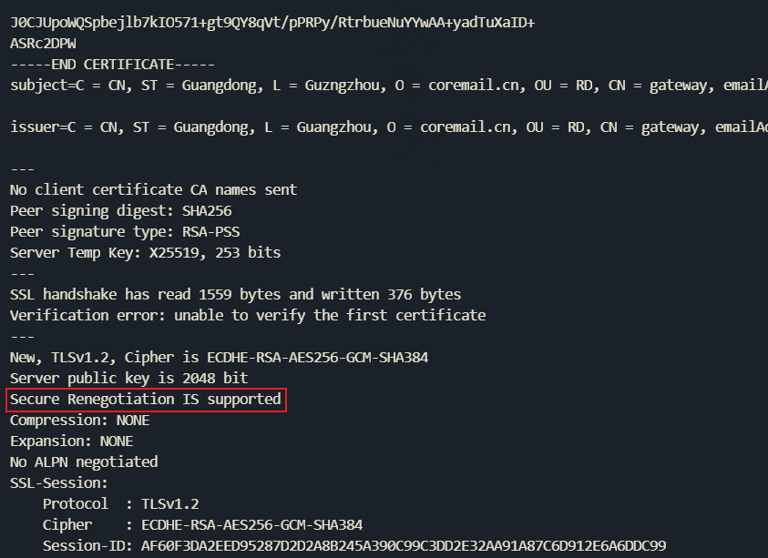
测试 Client Initiated Secure Renegotiation
openssl s_client -connect TARGET：443
类型：
HEAD / HTTP / 1.1
R
如果你看到响应：
HEAD / HTTP / 1.1
R
RENEGOTIATING
即服务器允许 client renegotiation。
如果你看到回应：
HEAD / HTTP/1.1
R
RENEGOTIATING
139681067286040:error:1409E0E5:SSL routines:ssl3_write_bytes:ssl handshake failure:s3_pkt.c:656:
则服务器不支持 client renegotiation。
修复方法
建议升级 openssl 来进行修复，openssl-0.98m 之后的版本就已经修复了该漏洞，使用了 Secure Renegotiation。
其他
# 验证 ssl-cert 证书问题可以使用
nmap -sV -Pn --script ssl-cert 端口 IP
# 验证 SSL 证书的有限期可以使用
nmap -sV -Pn --script ssl-date 端口 IP
# 验证 Debian OpenSSL keys 可使用
nmap -sV -Pn --script ssl-known-key 端口 IP
# 验证 CVE-2014-0160 OpenSSL Heartbleed bug 可使用
nmap -sV -Pn --script ssl-heartbleed 端口 IP
========
# 测试单个主机上的所有内容并输出到控制台
./testssl.sh -e -E -f -p -y -Y -S -P -c -H -U TARGET-HOST
# 测试单个主机上的所有内容并输出到 HTML
./testssl.sh -e -E -f -p -y -Y -S -P -c -H -U TARGET-HOST | aha> OUTPUT-FILE.html
# 测试子网上的所有主机并输出到 HTML
./testssl.sh -e -E -f -p -y -Y -S -P -c -H -U 192.168.1.0/24 | aha> OUTPUT-FILE.html
# 与上述相同，但只列举每个服务器支持的密码类型
./testssl.sh -E 192.168.1.0/24 | aha> OUTPUT-FILE.html
0x02 检测方法
使用 NMAP 检测
- Window 需要下载安装 nmap，官网地址：https://nmap.org/download.html
- kali 可直接使用
nmap -sV --script ssl-enum-ciphers 端口 IP
┌──(root㉿kali)-[/home/testssl.sh]
└─# nmap -sV --script ssl-enum-ciphers 9443 192.168.201.216
Starting Nmap 7.93 ( https://nmap.org ) at 2023-05-23 03:19 EDT
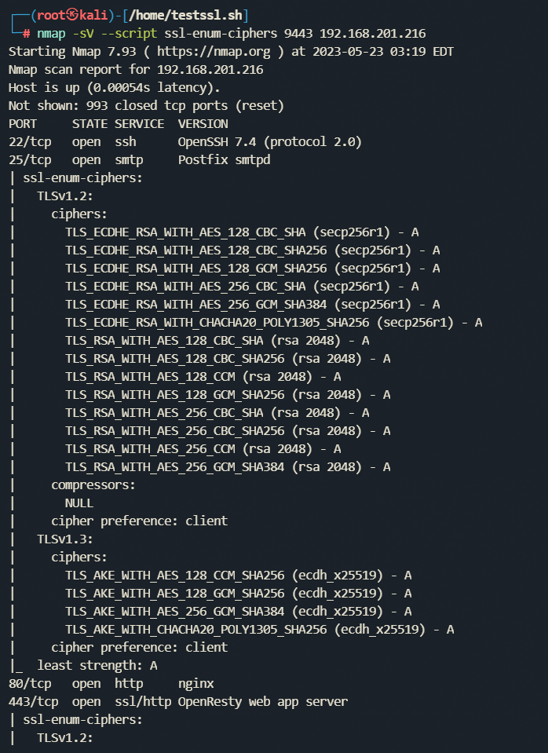
使用 testssl.sh 工具
testssl.sh 可以对
TLS/SSLServer 端 Cipher、Protocol 进行检测，还可以进行 CCS 注入（CCS injection）、Heartbleed 等安全漏洞测试，功能全面丰富，可运行在 Linux/BSD 端，目前可以说是 TLS Server 端首选的测试工具。。
git clone --depth 1 https://github.com/drwetter/testssl.sh.git
┌──(root㉿kali)-[/home]
└─# cd testssl.sh
┌──(root㉿kali)-[/home/testssl.sh]
└─# ./testssl.sh -U 172.16.10.160
# 测试子网上的所有主机并输出到 HTML
./testssl.sh -e -E -f -p -y -Y -S -P -c -H -U 192.168.1.0/24 | aha> OUTPUT-FILE.html
其中常用的有
-
-E, --cipher-per-proto checks those per protocol, 检测各 Protocol ciphersuites 加密算法套件 -
-P, --server-preference displays the server’s picks: protocol+cipher，Server 的首选协议 + 密码 -
-S, --server-defaults displays the server’s default picks and certificate info，Server 的默认选择和证书信息 -
-U, --vulnerable tests all (of the following) vulnerabilities (if applicable)，检测所有漏洞 -J, --logjam tests for LOGJAM vulnerability，检测 CVE-2015-4000-
-4, --rc4, --appelbaum which RC4 ciphers are being offered，检测 CVE-2013-2566 -
--ciphers 弱密码识别
其他可以参看 --help 命令
┌──(root㉿kali)-[/home/testssl.sh]
└─# ./testssl.sh --help
"testssl.sh [options] <URI>" or "testssl.sh <options>"
"testssl.sh <option>", where <option> is mostly standalone and one of:
--help what you're looking at
-b, --banner displays banner + version of testssl.sh
-v, --version same as previous
-V, --local [pattern] pretty print all local ciphers (of openssl only). If search pattern supplied: it is an
an ignore case word pattern of cipher hexcode or any other string in its name, kx or bits
"testssl.sh [options] <URI>", where <URI> is:
<URI> host|host:port|URL|URL:port port 443 is default, URL can only contain HTTPS as a protocol
and [options] is/are:
-t, --starttls <protocol> Does a run against a STARTTLS enabled service which is one of ftp, smtp, lmtp, pop3, imap,
sieve, xmpp, xmpp-server, telnet, ldap, nntp, postgres, mysql
--xmpphost <to_domain> For STARTTLS xmpp or xmpp-server checks it supplies the domainname (like SNI)
--mx <domain/host> Tests MX records from high to low priority (STARTTLS, port 25)
--file/-iL <fname> Mass testing option: Reads one testssl.sh command line per line from <fname>.
Can be combined with --serial or --parallel. Implicitly turns on "--warnings batch".
Text format 1: Comments via # allowed, EOF signals end of <fname>
Text format 2: nmap output in greppable format (-oG), 1 port per line allowed
--mode <serial|parallel> Mass testing to be done serial (default) or parallel (--parallel is shortcut for the latter)
--warnings <batch|off> "batch" doesn't continue when a testing error is encountered, off continues and skips warnings
--connect-timeout <seconds> useful to avoid hangers. Max <seconds> to wait for the TCP socket connect to return
--openssl-timeout <seconds> useful to avoid hangers. Max <seconds> to wait before openssl connect will be terminated
single check as <options> ("testssl.sh URI" does everything except -E and -g):
-e, --each-cipher checks each local cipher remotely
-E, --cipher-per-proto checks those per protocol
-s, --std, --categories tests standard cipher categories by strength
-f, --fs, --nsa checks forward secrecy settings
-p, --protocols checks TLS/SSL protocols (including SPDY/HTTP2)
-g, --grease tests several server implementation bugs like GREASE and size limitations
-S, --server-defaults displays the server's default picks and certificate info
-P, --server-preference displays the server's picks: protocol+cipher
-x, --single-cipher <pattern> tests matched <pattern> of ciphers
(if <pattern> not a number: word match)
-c, --client-simulation test client simulations, see which client negotiates with cipher and protocol
-h, --header, --headers tests HSTS, HPKP, server/app banner, security headers, cookie, reverse proxy, IPv4 address
-U, --vulnerable tests all (of the following) vulnerabilities (if applicable)
-H, --heartbleed tests for Heartbleed vulnerability
-I, --ccs, --ccs-injection tests for CCS injection vulnerability
-T, --ticketbleed tests for Ticketbleed vulnerability in BigIP loadbalancers
--BB, --robot tests for Return of Bleichenbacher's Oracle Threat (ROBOT) vulnerability
--SI, --starttls-injection tests for STARTTLS injection issues
-R, --renegotiation tests for renegotiation vulnerabilities
-C, --compression, --crime tests for CRIME vulnerability (TLS compression issue)
-B, --breach tests for BREACH vulnerability (HTTP compression issue)
-O, --poodle tests for POODLE (SSL) vulnerability
-Z, --tls-fallback checks TLS_FALLBACK_SCSV mitigation
-W, --sweet32 tests 64 bit block ciphers (3DES, RC2 and IDEA): SWEET32 vulnerability
-A, --beast tests for BEAST vulnerability
-L, --lucky13 tests for LUCKY13
-WS, --winshock tests for winshock vulnerability
-F, --freak tests for FREAK vulnerability
-J, --logjam tests for LOGJAM vulnerability
-D, --drown tests for DROWN vulnerability
-4, --rc4, --appelbaum which RC4 ciphers are being offered?
-U 结果如下：
Start 2023-05-23 03:00:30 -->> 192.168.201.216:443 (192.168.201.216) <<--
rDNS (192.168.201.216): --
Service detected: HTTP
Testing vulnerabilities
Heartbleed (CVE-2014-0160) not vulnerable (OK), no heartbeat extension
CCS (CVE-2014-0224) not vulnerable (OK)
Ticketbleed (CVE-2016-9244), experiment. not vulnerable (OK)
ROBOT not vulnerable (OK)
Secure Renegotiation (RFC 5746) supported (OK)
Secure Client-Initiated Renegotiation not vulnerable (OK)
CRIME, TLS (CVE-2012-4929) not vulnerable (OK)
BREACH (CVE-2013-3587) no gzip/deflate/compress/br HTTP compression (OK) - only supplied "/" tested
POODLE, SSL (CVE-2014-3566) not vulnerable (OK)
TLS_FALLBACK_SCSV (RFC 7507) No fallback possible (OK), no protocol below TLS 1.2 offered
SWEET32 (CVE-2016-2183, CVE-2016-6329) not vulnerable (OK)
FREAK (CVE-2015-0204) not vulnerable (OK)
DROWN (CVE-2016-0800, CVE-2016-0703) not vulnerable on this host and port (OK)
make sure you don't use this certificate elsewhere with SSLv2 enabled services, see https://search.censys.io/search?resource=hosts&virtual_hosts=INCLUDE&q=5BD3F9DA1703B1FC188EC28E90BAD6854689D1E721B0645A7AF5DF88FC75DBBE
LOGJAM (CVE-2015-4000), experimental not vulnerable (OK): no DH EXPORT ciphers, no DH key detected with <= TLS 1.2
BEAST (CVE-2011-3389) not vulnerable (OK), no SSL3 or TLS1
LUCKY13 (CVE-2013-0169), experimental potentially VULNERABLE, uses cipher block chaining (CBC) ciphers with TLS. Check patches
Winshock (CVE-2014-6321), experimental not vulnerable (OK) - ARIA, CHACHA or CCM ciphers found
RC4 (CVE-2013-2566, CVE-2015-2808) no RC4 ciphers detected (OK)
Done 2023-05-23 03:00:59 [ 31s] -->> 192.168.201.216:443 (192.168.201.216) <<--
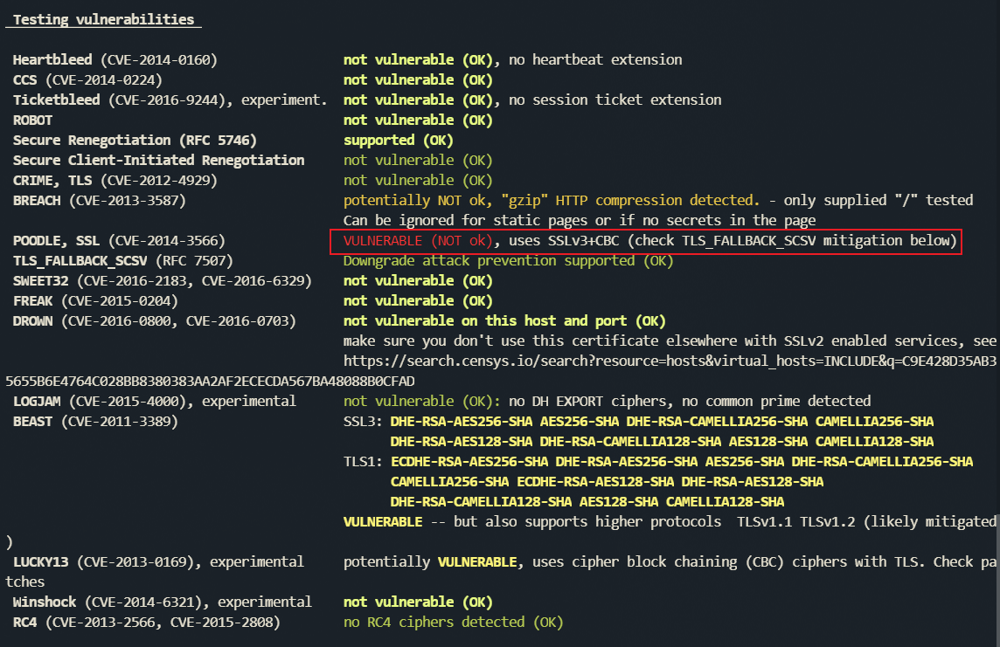
Web 网页版 testssl.sh（免安装）：https://inspect.rapydblok.com【不推荐】
【注】：网页版使用要注意隐私，自用 Server 推荐还是用 cmd 版测试。
在线检测
- SSL Server Test（国内）
- SSL Server Test（国外）
- filippo.io - Vulnerability tests
- https://wosign.ssllabs.com/
0x03 漏洞复现
Vulhub
- Vulhub - Docker-Compose file for vulnerability environment
- https://github.com/vulhub/vulhub
- Docker 教程_w3cschool
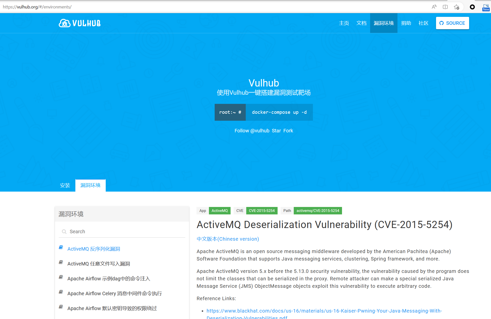
心脏滴血复现
环境准备
| 主机 | IP | 用途 |
|---|---|---|
| Ubuntu 虚拟机 | 192.168.201.156 | 基于 Vulhub 搭建 OpenSSL“心脏滴血”漏洞环境 |
| Kali Linux 虚拟机 | 192.168.202.61 | 使用 MSF 框架对存在漏洞的靶机进行攻击 |
手动搭建
https://www.openssl.org/source/old/1.0.1/source/old/1.0.1/index.html (openssl.org)
准备一台 kali 和一台装有 OpenSSL1.0.1 版本的虚拟机【漏洞环境】
下载有漏洞的 OpenSSL 版本
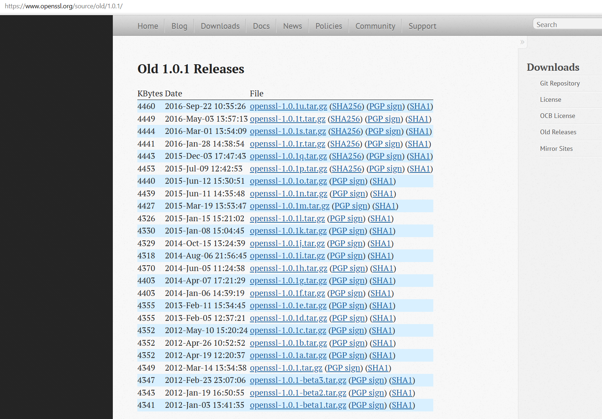
- 编译安装
# 升级源
apt-get upgrade
sudo apt-get update
# 安装编译环境
root@refl4:/home/openssl-1.0.1# sudo apt-get install build-essential
# 编译安装
cd /home
# 在 /usr/local/openssl 目录下安装 OpenSSL，并设置默认的 OpenSSL 目录为 /usr/local/openssl
./config --prefix=/usr/local/openssl --openssldir=/usr/local/openssl
# 编译安装
sudo make clean
sudo make && make install
# 设置软链
ln -s <目标文件或目录> <链接名称>
# ln -s /path/to/directory /path/to/symlink
# 这将创建一个名为 /path/to/symlink 的符号链接，指向 /path/to/directory。
Vulhub 搭建
因为我使用的是 docker compose 是 Compose V2，所以使用 docker compose。
History of Compose | Docker Documentation
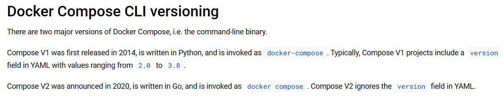
root@refl4:/home# git clone https://github.com/vulhub/vulhub.git
root@refl4:/home/vulhub/openssl/CVE-2014-0160# pwd
/home/vulhub/openssl/CVE-2014-0160
root@refl4:/home/vulhub/openssl/CVE-2014-0160# ls
1.png 2.png docker-compose.yml README.md README.zh-cn.md ssltest.py www
root@refl4:/home/vulhub/openssl/CVE-2014-0160# docker compose up -d
[+] Running 8/8
✔ nginx 7 layers [⣿⣿⣿⣿⣿⣿⣿] 0B/0B Pulled 131.1s
✔ b281ebec60d2 Pull complete 113.1s
✔ 2700c1ade95c Pull complete 113.2s
✔ cd1f945398e5 Pull complete 113.8s
✔ 24291727d0f3 Pull complete 113.9s
✔ c661453e1eb5 Pull complete 113.9s
✔ f4f1857f7bb1 Pull complete 113.9s
✔ 951d0b01db0f Pull complete 113.9s
[+] Running 2/2
✔ Network cve-2014-0160_default Created 0.1s
✔ Container cve-2014-0160-nginx-1 Started 1.3s
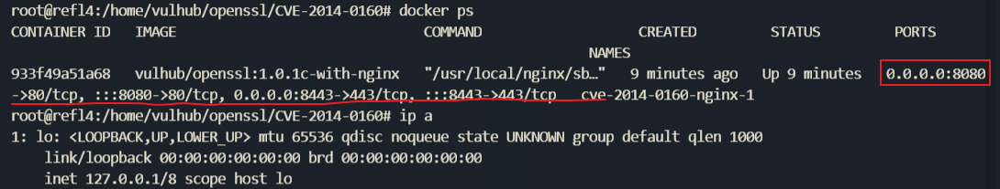
访问
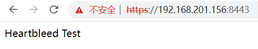
Exploit
- 使用 namp 进行探测
┌──(root㉿kali)-[~]
└─# nmap -sV -p 8443 -script ssl-heartbleed.nse 192.168.201.156
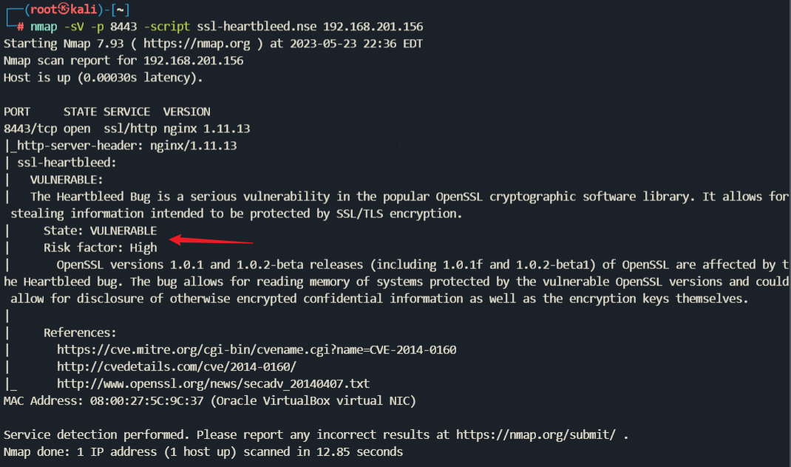
- 使用
testssl.sh 进行探测
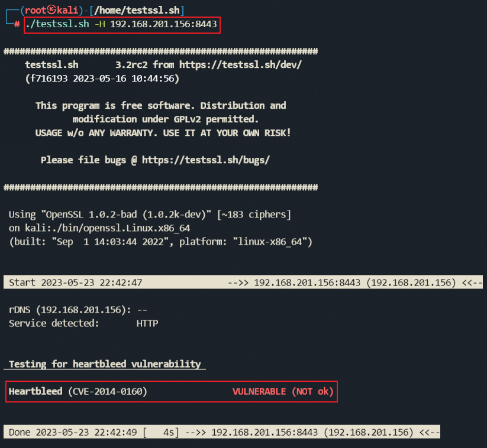
- 使用 Metasploit 验证已存在的 Heartbleed，使用详细设置将显示 Heartbleed 暴露的内存泄漏。
┌──(root㉿kali)-[/home/testssl.sh]
└─# msfconsole
msf6> search heartbleed
msf6> use auxiliary/scanner/ssl/openssl_heartbleed
# 查看需要设置参数
msf6 auxiliary(scanner/ssl/openssl_heartbleed) > show options
msf6 auxiliary(scanner/ssl/openssl_heartbleed) > set RHOSTS 192.168.201.156
RHOSTS => 192.168.201.156
msf6 auxiliary(scanner/ssl/openssl_heartbleed) > set RPORT 8443
RPORT => 8443
msf6 auxiliary(scanner/ssl/openssl_heartbleed) > set verbose true
verbose => true
msf6 auxiliary(scanner/ssl/openssl_heartbleed) > run
每次都可以获取 64 字节 的信息，如果有人此时在登录 Web 应用，还可以直接抓到账号密码等信息。
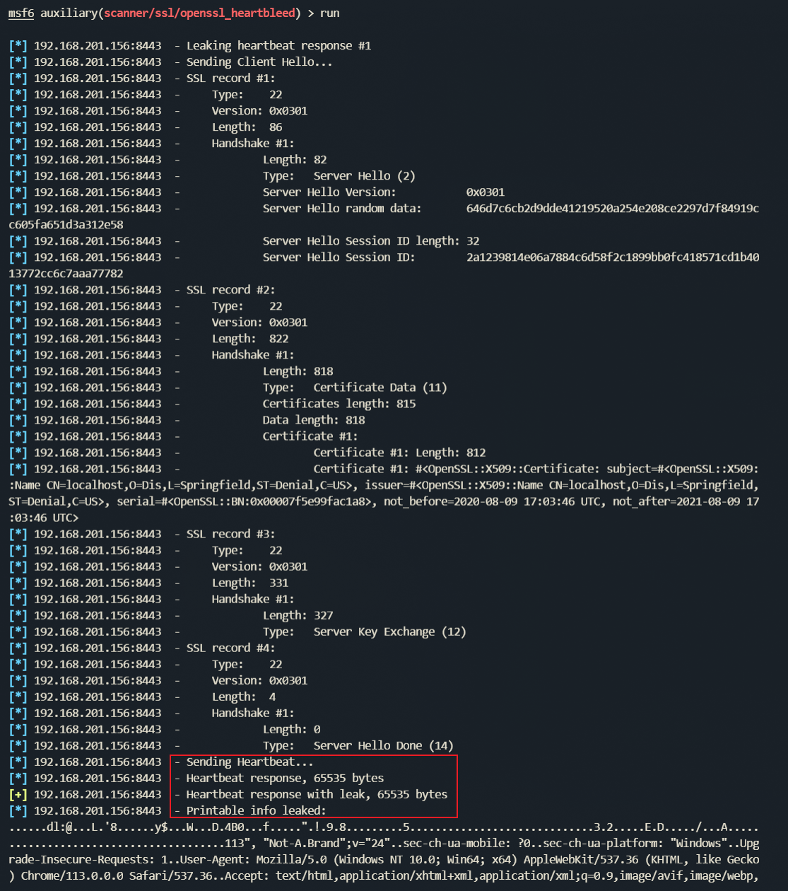
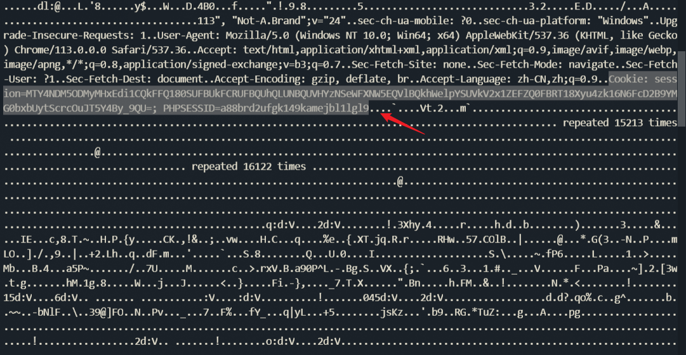
漏洞环境本机自测
root@refl4:/home/vulhub/openssl/CVE-2014-0160# python3 ssltest.py 192.168.201.156 -p 8443
编译 OpenSSL 遇到的错误
报错
POD document had syntax errors at /usr/bin/pod2man line 69. make: *** [install_docs]
cms.pod around line 457: Expected text after =item, not a number
cms.pod around line 461: Expected text after =item, not a number
cms.pod around line 465: Expected text after =item, not a number
cms.pod around line 470: Expected text after =item, not a number
cms.pod around line 474: Expected text after =item, not a number
POD document had syntax errors at /usr/bin/pod2man line 69.
make: *** [install_docs] Error 1
解决方法
rm -f /usr/bin/pod2man，重新编译安装即可。
0x04 修复方法汇总
使用此方法上述所有漏洞可全部修复(将
RC4,DES/3DES,EXP 等弱加密算法及 SSL 弱加密协议替换为安全性更高的)
Windows
按下
Win + R，进入"运行"，键入gpedit.msc，打开"本地组策略编辑器"计算机配置 > 管理模板 > 网络 > ssl 配置设置。
在 SSL 配置设置，打开 SSL 密码套件顺序设置，点击已启用。
更换 SSL 密码套件。
原 SSL 密码套件：
TLS_ECDHE_RSA_WITH_AES_256_CBC_SHA384_P256,TLS_ECDHE_RSA_WITH_AES_256_CBC_SHA384_P384,TLS_ECDHE_RSA_WITH_AES_128_CBC_SHA256_P256,TLS_ECDHE_RSA_WITH_AES_128_CBC_SHA256_P384,TLS_ECDHE_RSA_WITH_AES_256_CBC_SHA_P256,TLS_ECDHE_RSA_WITH_AES_256_CBC_SHA_P384,TLS_ECDHE_RSA_WITH_AES_128_CBC_SHA_P256,TLS_ECDHE_RSA_WITH_AES_128_CBC_SHA_P384,TLS_DHE_RSA_WITH_AES_256_GCM_SHA384,TLS_DHE_RSA_WITH_AES_128_GCM_SHA256,TLS_DHE_RSA_WITH_AES_256_CBC_SHA,TLS_DHE_RSA_WITH_AES_128_CBC_SHA,TLS_RSA_WITH_AES_256_GCM_SHA384,TLS_RSA_WITH_AES_128_GCM_SHA256,TLS_RSA_WITH_AES_256_CBC_SHA256,TLS_RSA_WITH_AES_128_CBC_SHA256,TLS_RSA_WITH_AES_256_CBC_SHA,TLS_RSA_WITH_AES_128_CBC_SHA,TLS_ECDHE_ECDSA_WITH_AES_256_GCM_SHA384_P384,TLS_ECDHE_ECDSA_WITH_AES_128_GCM_SHA256_P256,TLS_ECDHE_ECDSA_WITH_AES_128_GCM_SHA256_P384,TLS_ECDHE_ECDSA_WITH_AES_256_CBC_SHA384_P384,TLS_ECDHE_ECDSA_WITH_AES_128_CBC_SHA256_P256,TLS_ECDHE_ECDSA_WITH_AES_128_CBC_SHA256_P384,TLS_ECDHE_ECDSA_WITH_AES_256_CBC_SHA_P256,TLS_ECDHE_ECDSA_WITH_AES_256_CBC_SHA_P384,TLS_ECDHE_ECDSA_WITH_AES_128_CBC_SHA_P256,TLS_ECDHE_ECDSA_WITH_AES_128_CBC_SHA_P384,TLS_DHE_DSS_WITH_AES_256_CBC_SHA256,TLS_DHE_DSS_WITH_AES_128_CBC_SHA256,TLS_DHE_DSS_WITH_AES_256_CBC_SHA,TLS_DHE_DSS_WITH_AES_128_CBC_SHA,TLS_RSA_WITH_3DES_EDE_CBC_SHA,TLS_DHE_DSS_WITH_3DES_EDE_CBC_SHA,TLS_RSA_WITH_RC4_128_SHA,TLS_RSA_WITH_RC4_128_MD5,TLS_RSA_WITH_NULL_SHA256,TLS_RSA_WITH_NULL_SHA,SSL_CK_RC4_128_WITH_MD5,SSL_CK_DES_192_EDE3_CBC_WITH_MD5
替换为：
TLS_ECDHE_ECDSA_WITH_AES_128_GCM_SHA256_P256,TLS_ECDHE_ECDSA_WITH_AES_128_GCM_SHA256_P384,TLS_ECDHE_ECDSA_WITH_AES_128_GCM_SHA256_P521,TLS_ECDHE_ECDSA_WITH_AES_256_GCM_SHA384_P384,TLS_ECDHE_ECDSA_WITH_AES_256_GCM_SHA384_P521,TLS_RSA_WITH_AES_128_CBC_SHA256,TLS_RSA_WITH_AES_256_CBC_SHA256,TLS_ECDHE_RSA_WITH_AES_128_CBC_SHA256_P256,TLS_ECDHE_RSA_WITH_AES_128_CBC_SHA256_P384,TLS_ECDHE_RSA_WITH_AES_128_CBC_SHA256_P521,TLS_ECDHE_RSA_WITH_AES_256_CBC_SHA384_P256,TLS_ECDHE_RSA_WITH_AES_256_CBC_SHA384_P384,TLS_ECDHE_RSA_WITH_AES_256_CBC_SHA384_P521,TLS_ECDHE_ECDSA_WITH_AES_128_CBC_SHA256_P256,TLS_ECDHE_ECDSA_WITH_AES_128_CBC_SHA256_P384,TLS_ECDHE_ECDSA_WITH_AES_128_CBC_SHA256_P521,TLS_ECDHE_ECDSA_WITH_AES_256_CBC_SHA384_P384,TLS_ECDHE_ECDSA_WITH_AES_256_CBC_SHA384_P521,TLS_DHE_DSS_WITH_AES_128_CBC_SHA256,TLS_DHE_DSS_WITH_AES_256_CBC_SHA256,TLS_RSA_WITH_NULL_SHA256
- 重启系统再扫。
使用以下方法可同时修复
SSL/TLS受诫礼(BAR-MITZVAH)攻击漏洞(CVE-2015-2808)【原理扫描】，SSL/TLS RC4 信息泄露漏洞(CVE-2013-2566)【原理扫描】
这两个漏洞都是 RC4 算法的漏洞问题，方法就是禁用 RC4 改用别的算法。
方法一
控制面板 ---> 系统和安全 ---> 管理工具 ---> 本地安全策略 ---> 本地策略 ---> 安全选项 ---> 系统加密：将 FIPS 兼容算法用于加密、哈希和签名； 右键 ---> 属性 ---> 点击“已启用” ---> “确定”
使用此方法之后可能会导致某些只支持 RC4 算法的服务无法正常启用。
方法二
注册表中启用 TLS1.2
[HKEY_LOCAL_MACHINE\SYSTEM\CurrentControlSet\Control\SecurityProviders\SCHANNEL\Protocols\TLS 1.2]
[HKEY_LOCAL_MACHINE\SYSTEM\CurrentControlSet\Control\SecurityProviders\SCHANNEL\Protocols\TLS 1.2\Client]
"DisabledByDefault"=dword:00000000
"Enabled"=dword:00000001
[HKEY_LOCAL_MACHINE\SYSTEM\CurrentControlSet\Control\SecurityProviders\SCHANNEL\Protocols\TLS 1.2\Server]
"DisabledByDefault "=dword:00000000
"Enabled"=dword:00000001
注册表中禁用 SSL2.0
[HKEY_LOCAL_MACHINE\SYSTEM\CurrentControlSet\Control\SecurityProviders\SCHANNEL\Protocols]
[HKEY_LOCAL_MACHINE\SYSTEM\CurrentControlSet\Control\SecurityProviders\SCHANNEL\Protocols\SSL 2.0]
[HKEY_LOCAL_MACHINE\SYSTEM\CurrentControlSet\Control\SecurityProviders\SCHANNEL\Protocols\SSL 2.0\Client]
"DisabledByDefault"=dword:00000000
禁用 RC4
注册表中将 RC4 启用项都禁止，没有项需要新建
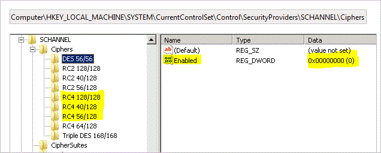
[HKEY_LOCAL_MACHINE\SYSTEM\CurrentControlSet\Control\SecurityProviders\SCHANNEL\Ciphers]
[HKEY_LOCAL_MACHINE\SYSTEM\CurrentControlSet\Control\SecurityProviders\SCHANNEL\Ciphers\RC4 128/128]
"Enabled"=dword:00000000
[HKEY_LOCAL_MACHINE\SYSTEM\CurrentControlSet\Control\SecurityProviders\SCHANNEL\Ciphers\RC4 40/128]
"Enabled"=dword:00000000
[HKEY_LOCAL_MACHINE\SYSTEM\CurrentControlSet\Control\SecurityProviders\SCHANNEL\Ciphers\RC4 56/128]
"Enabled"=dword:00000000
对于 SSL 3.0 POODLE 攻击信息泄露漏洞(CVE-2014-3566)【原理扫描】，目前已经调整为低危级别，不修复其实也可以。
- 点击“开始”，“运行”，输入 “Regedit”，点击 OK.
- 在注册表中寻找：
HKey_Local_Machine\System\CurrentControlSet\Control\SecurityProviders\SCHANNEL\Protocols\SSL 3.0\Server - 如果在 Protocols 下没有“SSL 3.0”选项，请依次新建“SSL 3.0”和“Server”项。在 Protocols 文件夹，右键单击项(K)，然后重命名文件夹为 SSL 3.0；在 SSL 3.0 文件夹，右键单击项(K)，然后重命名文件夹为 Server；
- 右键单击 server 的文件夹，选择新建，新建一个 DWORD 值。
- 在名称中，输入“Enabled”，回车。
- 请确保它显示
00000000(0)的数据列下。如果没有，请右键单击并选择修改，输入 0 作为数值数据。 - 点击 OK，退出注册表编辑器，然后重启电脑。
【注】：Windows 上关于 SSL/TSL 及密码套件的更改，在注册表中手动敲比较繁琐，可以使用 IIS Crypto 来管理，比较方便。
官方地址：https://www.nartac.com/Products/IISCrypto/Download
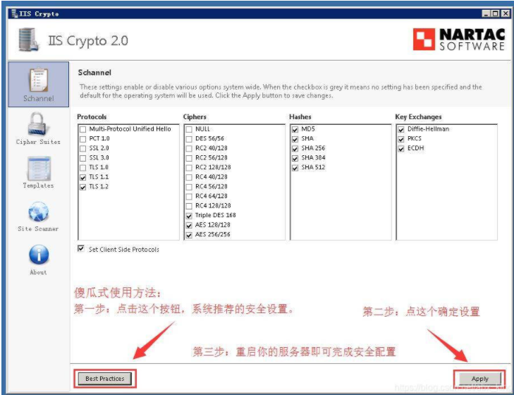
对于具体端口上的 SSL/TLS 服务器瞬时 Diffie-Hellman 公共密钥过弱【原理扫描】，首先需要使用生产大于 1 024bit 的 key 值，再将生成的文件加到具体报漏洞服务的配置文件里。
- http 服务器相关配置
- 首先生成大于
1024bit(例如2048bit)的 dhkey。
openssl dhparam -out dhparams.pem 2048 - 然后在对应服务器中配置
- 首先生成大于
Apache2.4.8 及以后版本
使用如下配置命令配置（http.conf 中或者对应的虚拟主机配置文件中添加）
SSLOpenSSLConfCmd DHParameters "{path to dhparams.pem}"
Apache2.4.7 版本 Apache2.2.31 版本及以后版本
redhat debian 等大多发行版中最新 Apache2.2.x
通过把 dhparams.pem 的内容直接附加到证书文件后
Apache2.4.7 之前 2.4.x 版本
Apache2.2.31 之前版本
dhparam 默认为 1024bit 无法修改
nginx 使用如下命令配置（在对应的虚拟主机配置文件 nginx.conf 中 server 字段内添加）
ssl_dhparam {path to dhparams.pem}
- 如果服务器配置无法修改，例如 Apache2.2.31 之前版本，可以禁用 DHE 系列算法，采用保密性更好的 ECDHE 系列算法，如果 ECDHE 不可用可以采用普通的 RSA。
更多解决方案请参考：https://weakdh.org/sysadmin.html
Linux
也可以在 Linux 针对具体端口服务上的 CVE-2016-2183，CVE-2015-2808，CVE-2013-2566，CVE-2015-4000 等弱加密算法导致的漏洞进行逐个修复，只需要针对具体服务在配置文件中将
DES/3DES,RC4,EXP 等算法禁用或指定为其他强加密算法即可。
Nginx
普通推荐如下
server {
ssl_ciphers ECDHE-RSA-AES128-GCM-SHA256:ECDHE:ECDH:AES:HIGH:!NULL:!aNULL:!MD5:!ADH:!RC4;
ssl_protocols TLSv1 TLSv1.1 TLSv1.2;
}
最佳实践
http {
......
ssl_session_timeout 5m;
ssl_session_cache shared:SSL:10m;
ssl_session_tickets off;
ssl_protocols SSLv3 TLSv1 TLSv1.1 TLSv1.2 TLSv1.3;
ssl_ciphers "ECDHE-RSA-AES256-GCM-SHA384:ECDHE-RSA-AES128-GCM-SHA256:DHE-RSA-AES256-GCM-SHA384:DHE-RSA-AES128-GCM-SHA256:ECDHE-RSA-AES256-SHA384:ECDHE-RSA-AES256-SHA:DHE-RSA-AES256-SHA256:DHE-RSA-AES256-SHA:AES256-GCM-SHA384:AES128-GCM-SHA256:AES256-SHA256:AES256-SHA:HIGH:!MEDIUM:!LOW:!aNULL:!eNULL:!EXPORT:!DES:!MD5:!PSK:!RC4:@STRENGTH";
ssl_prefer_server_ciphers on;
proxy_ssl_verify off;
......
server {
listen 80;
listen 443 ssl http2;
# server_name @web_name
ssl_certificate server.crt;
ssl_certificate_key server.key;
ssl_dhparam dhparam.pem;
ssl_stapling on;
ssl_stapling_verify on;
set $backend_ip 127.0.0.1;
location ~ ^/socket.io/ {
proxy_read_timeout 600;
proxy_send_timeout 600;
tcp_nodelay on;
gzip off;
proxy_http_version 1.1;
proxy_set_header X-FORWARDED-FOR $remote_addr;
proxy_set_header X-FORWARDED-PROTO $scheme;
proxy_set_header Upgrade $http_upgrade;
proxy_set_header Connection "upgrade";
proxy_set_header Accept-Encoding "";
proxy_pass http://$backend_ip:8082;
}
......
error_page 400 401 403 404 /404.html;
error_page 501 502 503 504 505 /50x.html;
}
#@do not remove the comment, @http_server
#@mirror_server_lookup
}
Apache
更新 Apache 根目录下 conf/httpd.conf 文件如下
<IfModule mod_ssl.c>
<VirtualHost *:443>
SSLProtocol TLSv1 TLSv1.1 TLSv1.2
SSLCipherSuite ECDHE-RSA-AES128-GCM-SHA256:ECDHE:ECDH:AES:HIGH:!NULL:!aNULL:!MD5:!ADH:!RC4
</VirtualHost>
</IfModule>
Tomcat
更新 %TOMCAT_HOME%\conf\server.xml 文件如下
<Connector port="443" protocol="HTTP/1.1" SSLEnabled="true"
scheme="https" secure="true"
SSLProtocol="TLSv1+TLSv1.1+TLSv1.2"
SSLCipherSuite="ECDHE-RSA-AES128-GCM-SHA256:ECDHE:ECDH:AES:HIGH:!NULL:!aNULL:!MD5:!ADH:!RC4" />
简单粗暴
此类漏洞，最简单的修复方式就是升级版本和禁用模块。
如 OpenSSL“心脏出血”漏洞（CVE-2014-0160）受影响的 OpenSSL 版本：
OpenSSL 1.0.2-beta
OpenSSL 1.0.1 - OpenSSL 1.0.1f
要解决此漏洞，简单粗暴的方法就是升级 OpenSSL 软件。建议服务器管理员或使用 1.0.1g 版，或使用 -DOPENSSL_NO_HEARTBEATS 选项重新编译 OpenSSL，从而禁用易受攻击的功能，直至可以更新服务器软件。
0x00 前人栽树
对知识的尊重，就算是抄也没关系，你得说明来源且前提是能学到学会~
- Heartbleed 心脏滴血漏洞总结（CVE-2014-0106） - s1awwhy - 博客园 (cnblogs.com)
- SSL/TSL 相关漏洞 CVE-2015-2808,CVE-2013-2566,CVE-2014-3566,CVE-2016-2183,cve-2015-4000,瞬时 Diffie-Hellman 公共密钥过弱修复总结 - 迪克推多 0 - 博客园 (cnblogs.com)
- 使用 openSSL 开源工具进行 SSL/TLS 安全测试 - 全球可信 TLS/SSL 数字证书商店-INFINISIGN
- SSL & TLS HTTPS Testing [Definitive Guide] - Aptive -- 【原文，国内的文章基本出自这个】
- 常见的几种 SSL/TLS 漏洞及攻击方式 - 全球可信 TLS/SSL 数字证书商店-INFINISIGN -- 【译文】
- Vulhub - Docker-Compose file for vulnerability environment
- (84 条消息) 渗透测试-Openssl 心脏出血漏洞复现_Tr0e 的博客-CSDN 博客
- https://annevi.cn/2021/02/14/https-study/